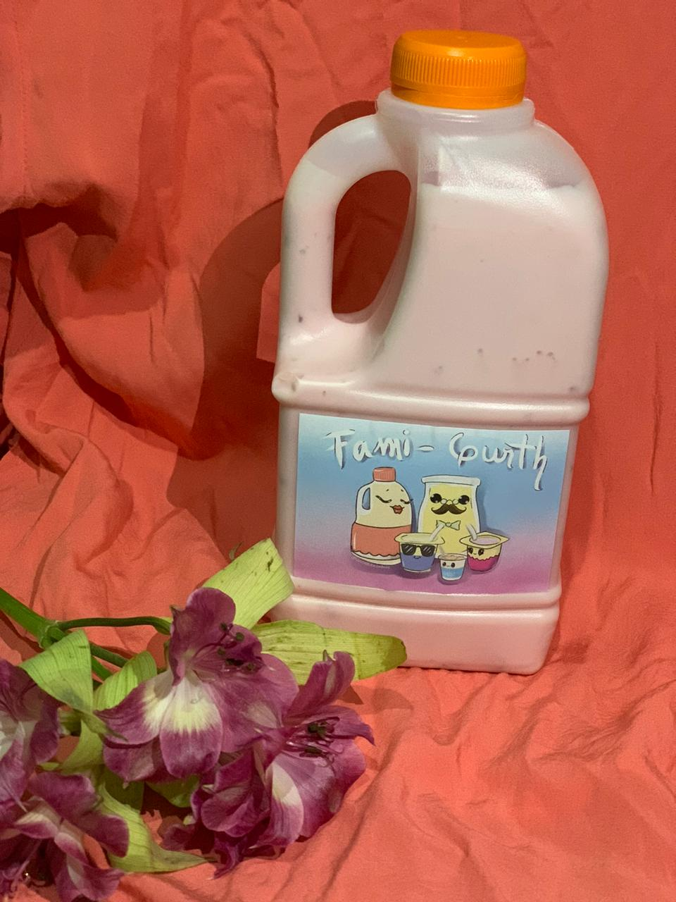
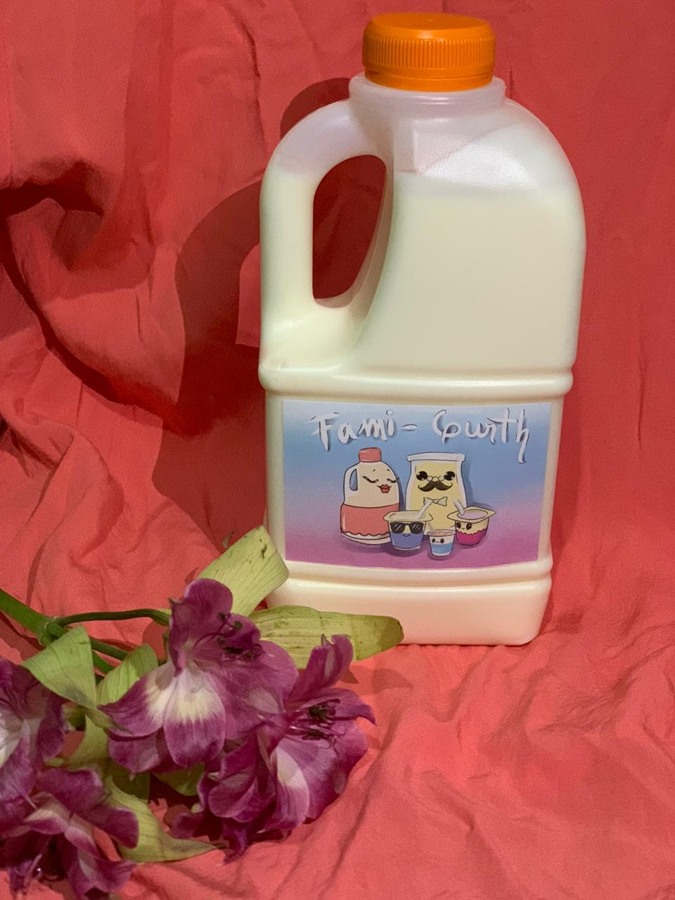

Salud y nutrición en tu Yogurt Artesanal
Alegre bienvenida
 Esta página ha sido creada para ti. En la familia Fami-gurth ®
nos
alegramos de contar con tu compañía como cliente, por eso, hemos dispuesto este espacio web para llegar
a ti desde la comodidad de tu hogar.
Esta página ha sido creada para ti. En la familia Fami-gurth ®
nos
alegramos de contar con tu compañía como cliente, por eso, hemos dispuesto este espacio web para llegar
a ti desde la comodidad de tu hogar.
Te invitamos a usar los canales de comunicación e información que hemos dispuesto para ti, los cuales encontrarás al final de la página (footer).
Nuestros Productos
Yogurt Tipo Postre
Una maravillosa delicia al estilo del Yogurth tipo griego, su textura, sabor y aroma son una dulce fantasía para tu paladar, al igual que nuestro Yogurt, puedes comerlo natural o endulzarlo con uno de nuestros deliciosos dulces (mora, melocotón, fresa). Te encantará llenar tus onces, sobremesas o desayunos con el delicioso sabor de nuestro Postre.
Peso aprox.: 120 gramos
Sabores: Natural, mora, fresa, melocotón.
Yogurt Litro
El acompañamiento especial para tus desayunos y sobremesas. Empieza tu día con el mejor sabor de tu yogurt artesanal Fami-gurth ®
Tú elijes el sabor, tú elijes la hora, tu elijes el toppging, tú elijes Fami-gurth ®
Contenido aprox.: 1 litro
Sabores: Natural, mora, fresa, melocotón.


Kumis Litro
A nuestra gran familia Fami-gurth ® ha llegado kumis para acompañar tus mejores momentos, alegra tu día con una chispa sensacional de sabor con un kumis tan delicioso que combina no solo con nuestros dulces, también con tu cereal favorito
Contenido aprox.: 1 litro
Sabores: Natural, (dulce de mora, fresa, melocotón opcionales).
Yogurt Bajo en Azucar
Nuestro yogurt bajo en azucar ayuda a cuidar tu salud manteniendo una dieta controlada en
azucares, recuerda que todos nuestros productos están libres de consevantes artificiales para
garantizar la calidad y el mejor sabor propio de la familia Fami-gurth ®
El acompañamiento especial para tus desayunos y sobremesas. Empieza tu día con el mejor sabor de
tu kumis artesanal
Contenido aprox.: 1 litro